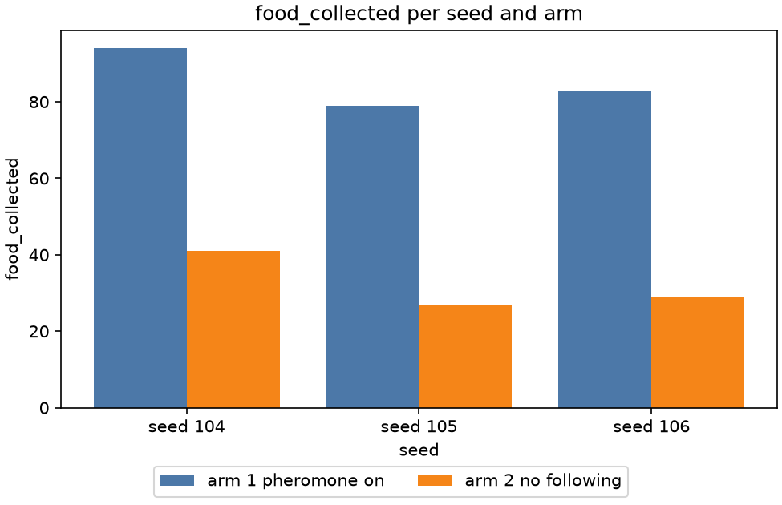

Stage report, step 8 of 8. Back to summary
| What | Compare pheromone on (arm 1) with no following (arm 2) on seeds 104 to 106. |
|---|---|
| Why | Strategy A stays only if following the trails brings food (D-010). |
| Input data | Real runs, d = 0, defense off, seeds 104 to 106 (runs/judgement/). |
| Output data | results/real/judgement/verdict.json. |
| Result (numbers) | arm 1 mean 85.33, arm 2 mean 32.33, threshold 1.2. |
| Result (good or bad) | Good: pass, keep strategy A. |
| Status | ran |
Figure and table

| seed | arm 1 food | arm 2 food | arm 1 above arm 2 |
|---|---|---|---|
| 104 | 94 | 41 | True |
| 105 | 79 | 27 | True |
| 106 | 83 | 29 | True |